この熱気に、会いに行く。
長崎くんち
諏訪神社・お旅所・中央公園・八坂神社ほか、長崎市内
写真は過去開催の様子・会場イメージです。出典は各イベントの詳細へ。
RAMEN TECH本会期は10/7〜11。前後10日に、Garraway Fの関連期間に合わせた9/21〜26も加えて紹介。掲載イベントの全会期は、各カード・詳細に表示しています。
秋の寄り道を見つける ↓PICK YOUR NEXT EXPERIENCE
福岡でふらっと。九州へ、ひと足。
長崎くんち
諏訪神社・お旅所・中央公園・八坂神社ほか、長崎市内
ART FAIR ASIA FUKUOKA 2026
福岡国際センター｜福岡市博多区築港本町2-2
INSPIRATION by SUNSET LIVE
INN THE PARK 福岡｜海の中道海浜公園・光と風の広場キャンプ場
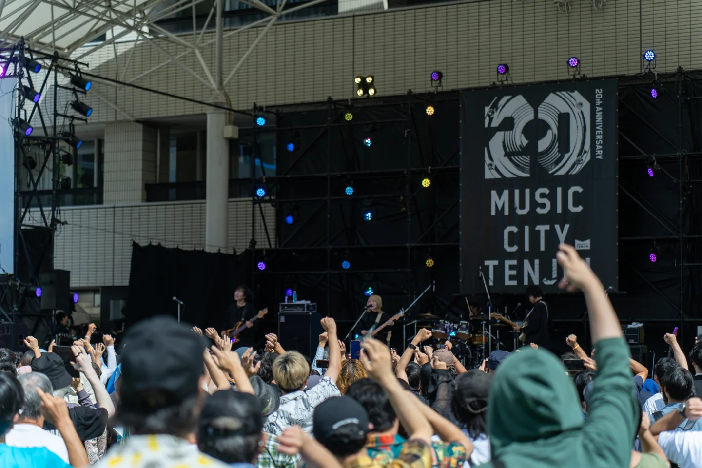
2026 / EVENT DATE09.26 — 272024年開催の様子MUSIC CITY TENJIN 2026
福岡市役所西側ふれあい広場ほか、天神エリア各所
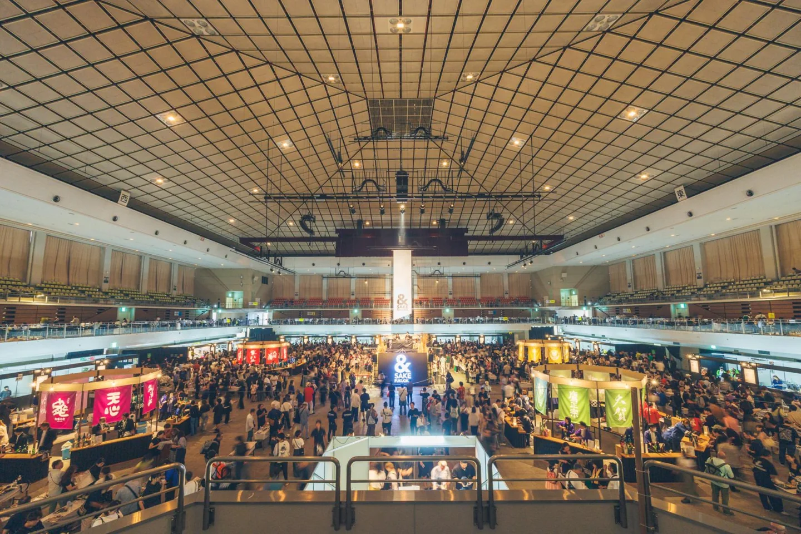
2026 / EVENT DATE09.26 — 27過去開催の様子&SAKE FUKUOKA 2026
福岡国際センター｜福岡市博多区築港本町2-2
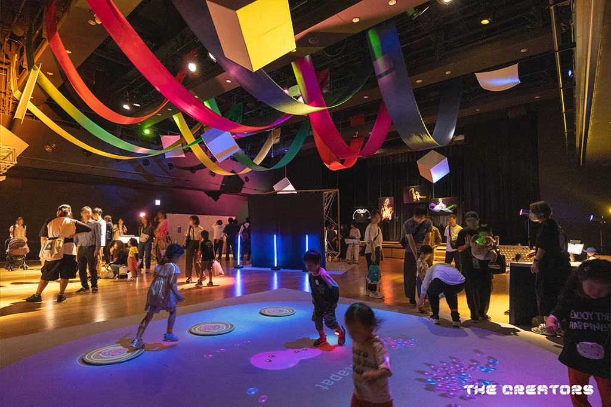
2026 / EVENT DATE10.10 — 122025年開催の様子The Creators 2026
10/10・11：UNITEDLAB ／ 10/12：ソラリアプラザ1F ゼファ
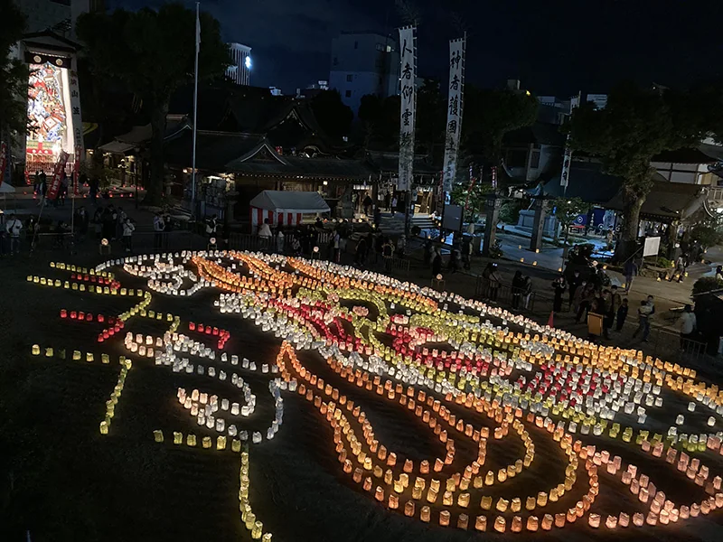
2026 / EVENT DATE10.172023年開催の様子第30回 博多灯明ウォッチング
冷泉・御供所・奈良屋・大浜、博多リバレイン、博多駅周辺ほか
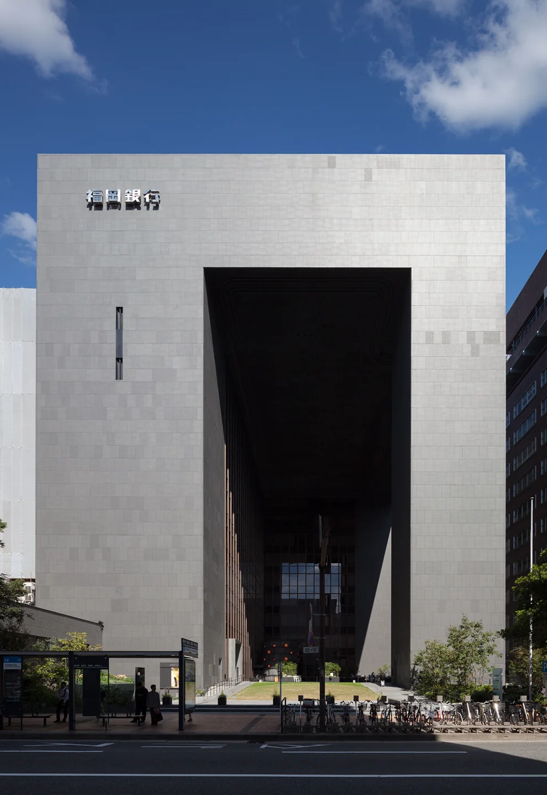
2026 / EVENT DATE10.03会場建築の写真FAF建築文化祭 ―福岡銀行本店の魅力再発見―
福岡銀行本店・FFGホール｜福岡市中央区天神2-13-1
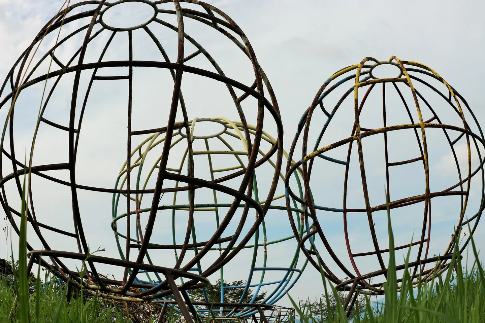
2026 / EVENT DATE09.19 — 10.12作品紹介写真FaN Week 2026
福岡市美術館、Artist Cafe Fukuoka、ONE FUKUOKA BLDG.ほか
SICF Fukuoka
ONE FUKUOKA BLDG. 6F カンファレンスホール
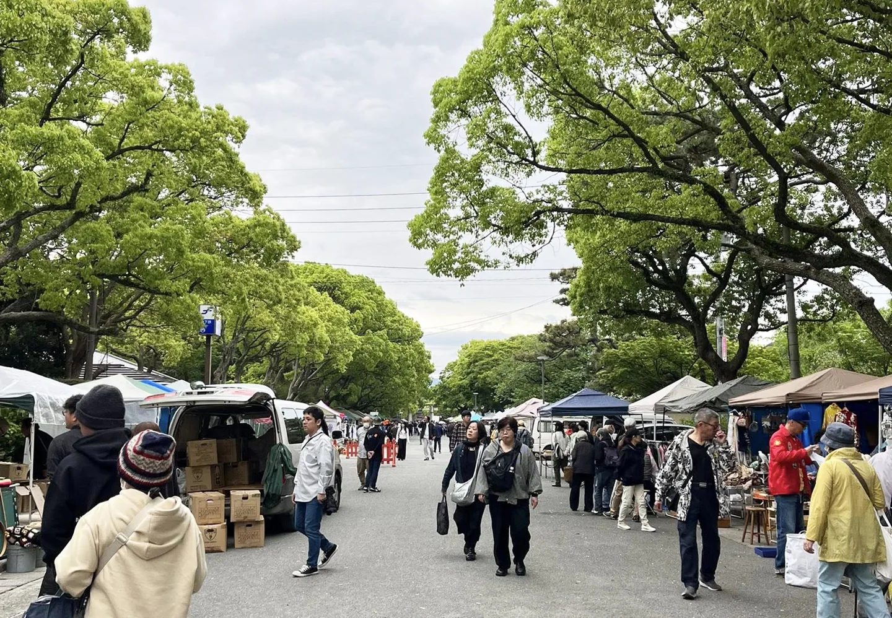
2026 / EVENT DATE10.04過去開催の様子風の市場 〜筥崎宮蚤の市〜
筥崎宮参道｜福岡市東区箱崎
SYNAPSE FESTIVAL 2026
INN THE PARK 福岡／海の中道海浜公園 光と風の広場
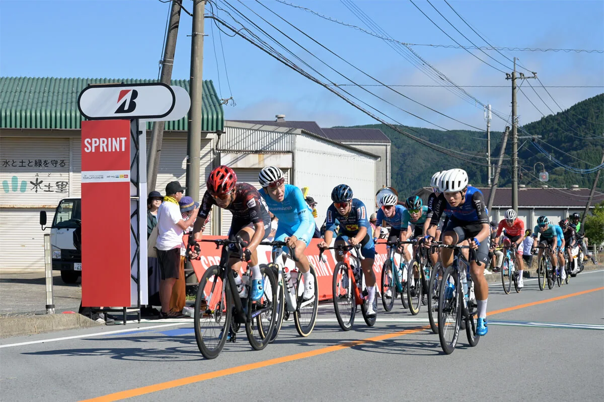
2026 / EVENT DATE10.09 — 122025年大会の様子マイナビ ツール・ド・九州2026
佐世保、唐津〜福岡、豊後大野〜竹田〜南阿蘇、日南など各ステージ
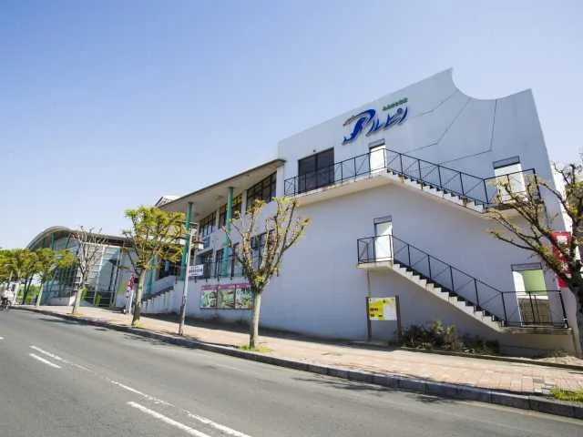
2026 / EVENT DATE10.10会場の外観第5回 SAGA酒まつり
唐津市ふるさと会館アルピノ 中央半野外スペース
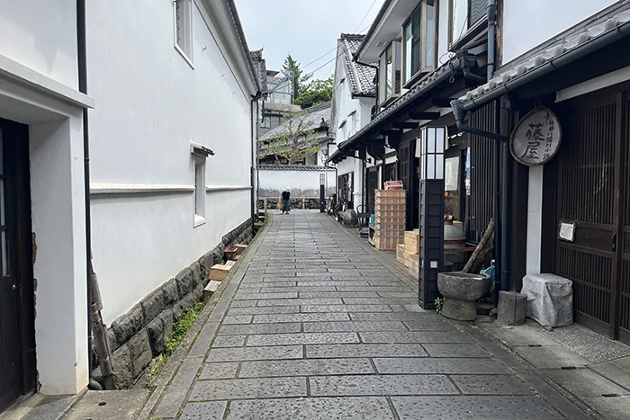
2026 / EVENT DATE10.11竹田城下町の風景城下町まちかど蚤の市
竹田市城下町通り（下本町通り・構口通り）
佐賀さいこうフェス2026
佐賀城内エリア（佐賀県立博物館・美術館前）
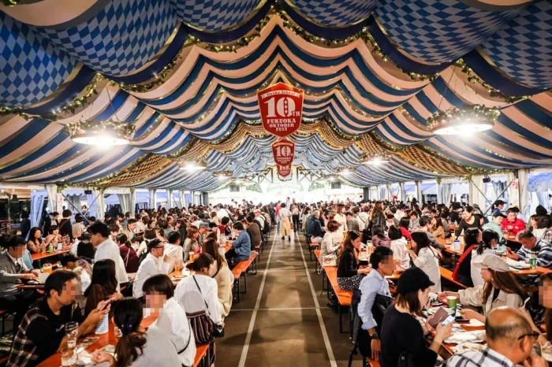
2026 / EVENT DATE10.16 — 25過去開催の様子福岡オクトーバーフェスト2026
冷泉公園｜福岡市博多区上川端町
2026年の詳細発表待ち
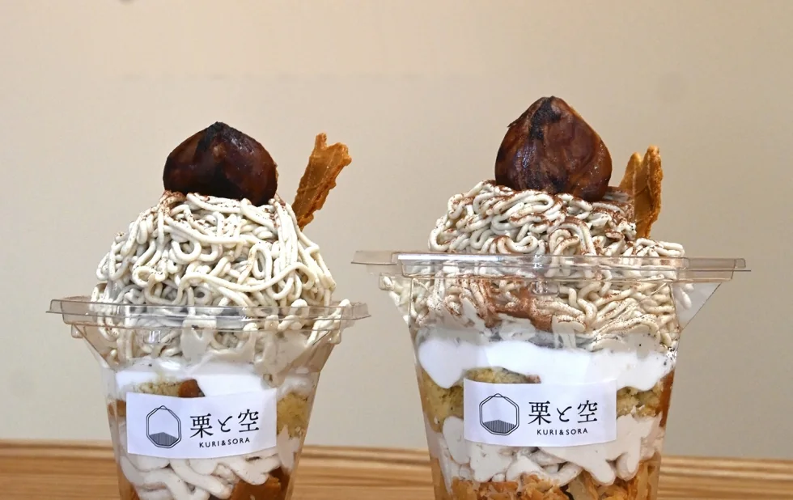
2026 / EVENT DATE09.01 — 11.30参加店のスイーツ写真くまもと山鹿和栗スイーツフェア2026
山鹿市内の参加42店舗
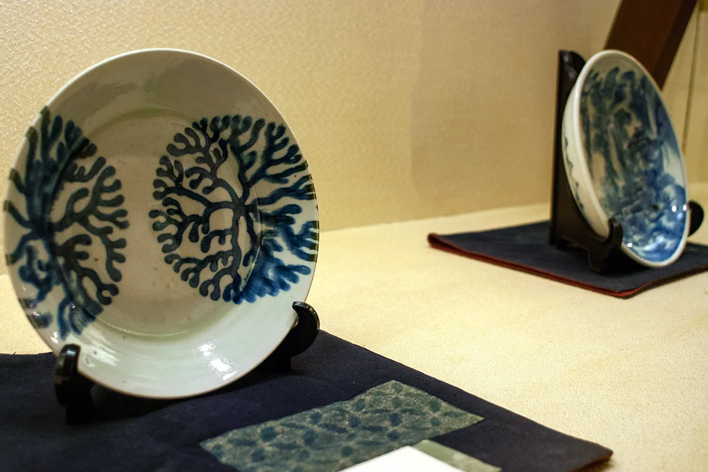
2026 / EVENT DATE10.09 — 13高浜焼・上田資料館の器第37回 天草西海岸「秋の窯元めぐり」
苓北町・天草市天草町の各窯元
エリアや期間を変えて、次の寄り道を探してみてください。
MAKE IT A TRIP.
RAMEN TECHの予定と往復の移動を、トリッププランナーで。
Garraway Fが編集する非公式の旅の特集です。2026年9月11日時点で公開されている日程から選び、イベントごとに開催案内をリンクしています。すべてのイベントを網羅するものではありません。開催変更、料金、予約、残席、休館日は主催者の案内でご確認ください。
福岡の企画選びには Fukuoka Now「福岡秋のガイド2026」 も参照しています。紹介文はこの特集のために編集。主催者情報と日程が異なる場合は主催者発表を優先しています。
写真は過去開催、会場、主催者の告知ビジュアルです。2026年の開催後写真ではありません。画像の権利は各権利者に帰属します。閲覧用に画像サイズを調整しています。写真の利用許諾を第三者へ付与するものではありません。
この特集のイベントは、RAMEN TECHのマイ予定には直接追加されません。各開催案内で参加方法をご確認ください。